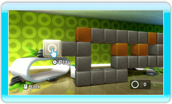
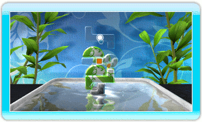
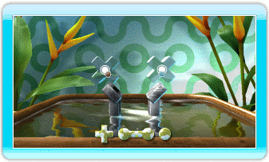

7 |
Arcade Mode |
 |
|
Arcade Mode

On this screen each block represents a level. The colors indicate which kind of level to expect. For every solved level you are awarded rings and new levels may become unlocked. The rings are needed to unlock new worlds.
To play a level point at one of the highlighted blocks with the Wii Remote and press  . Only highlighted blocks are unlocked and can be played. . Only highlighted blocks are unlocked and can be played.

In Arcade Mode you can play alone or together with a friend cooperatively. Synchronize a second Wii Remote to join as the second player. Complete levels to unlock new worlds and levels. To unlock a new world 20 rings are required. Unlocked worlds become available in Versus Mode as well. 
|
 |
 |
 |